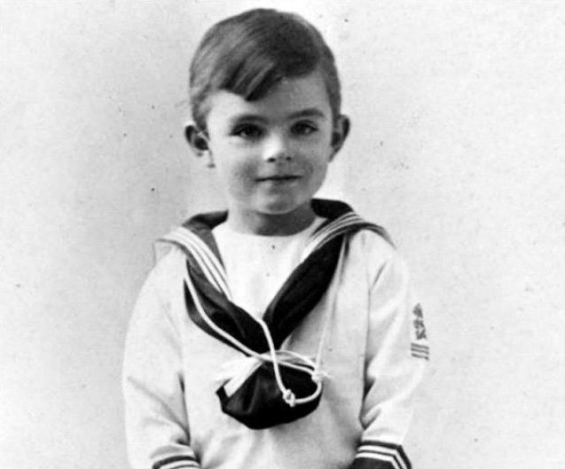
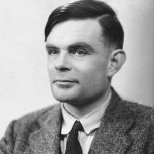
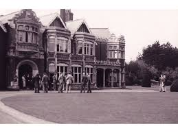

Born in London
His childhood curiosity grew into a lifelong talent for mathematics and science.
Interactive history report
A brilliant life, a hidden war, and a tragic truth.
Explore Alan Turing's life, achievements, and the pressures that shaped his world. Through interactive decoding, you will see why his death still resists a simple answer.

Three moments shaped the story: Turing's birth, his idea of the Turing machine, and his wartime codebreaking.

His childhood curiosity grew into a lifelong talent for mathematics and science.
He described a universal model of computation before modern computers existed.

His work with colleagues made machine-assisted Enigma decryption faster and more reliable.
Step into four pressures that shaped Turing's world: wartime bureaucracy, intelligence secrecy, machine intelligence, and criminalized identity.
Operate the two rotors to unlock three historical explanations for Turing's death. Use the + and - buttons to set both rotors from 1 to 5. Match the file codes to unlock one evidence file at a time.
Try the file codes: 1-3, 2-4, and 5-1.
[ Signal searching: no evidence file unlocked ]
Archive unlocked
This game is a simplified echo of Turing's wartime Bombe: a machine-assisted way to test possible Enigma settings faster than human hands alone.
Some facts are decoded. The human meaning remains harder to read.

He was a mathematician who changed modern computing, and a person deeply harmed by the laws and prejudices of his time.
I did not use copyrighted images directly from the online Turing Digital Archive. The visible card images are from files already present in this project.
The page uses your local archive first, then adds official or scholarly web sources where the death story needs extra precision.